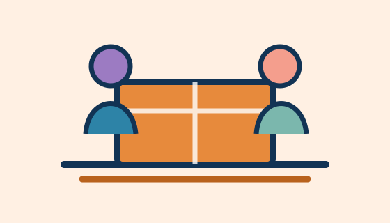

Educação e tecnologia
Educação para Todos
Aulas de reforço, oficinas de leitura e inclusão digital para crianças e adolescentes.
Apoiar este projetoFaça parte da mudança
Existem muitos jeitos de contribuir. Encontre uma frente que combine com você e venha construir novos horizontes conosco.
Onde atuamos
Ações desenhadas com a comunidade e para a comunidade.
Educação e tecnologia
Aulas de reforço, oficinas de leitura e inclusão digital para crianças e adolescentes.
Apoiar este projeto
Segurança alimentar
Campanhas de arrecadação e distribuição de alimentos para famílias acompanhadas.
Apoiar este projetoTrabalho e renda
Oficinas de currículo, capacitação e preparação para novas oportunidades de trabalho.
Apoiar este projetoTempo que faz diferença
Qualquer pessoa maior de 18 anos pode participar. Não é preciso ter experiência: oferecemos orientação para cada atividade.
Quero ser voluntárioPrefere conversar antes? Escreva para contato@institutonovohorizonte.org.br.
Apoio contínuo
Sua contribuição mantém as atividades acontecendo durante todo o ano. Podemos receber apoio financeiro e itens em bom estado.
Participe agora
Arrecadação de cadernos e mochilas para 120 estudantes.
Atividades de leitura e brincadeiras no Jardim Esperança.
Encontros gratuitos para quem busca uma nova oportunidade.